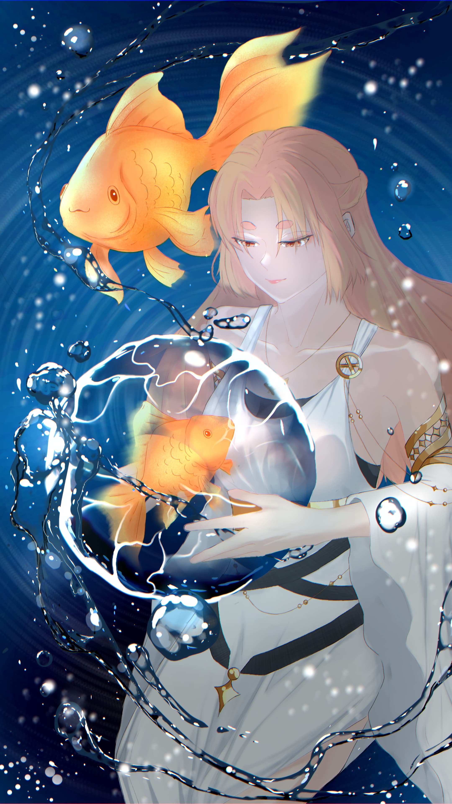

Pemrograman Komputer
Saya memiliki keahlian dalam pemrograman Komputer, salah satunya html.
Menggambar digital dan tradisional
Saya ahli dalam bidang seni yaitu menggambar dalam bentuk digital
maupun tradisional.
berikut adalah hasil gambar yang pernah saya buat:



Membuat Animasi
Selain menggambar, saya juga memiliki keahlian dalam membuat sebuah animasi.Berikut adalah hasil animasi yang pernah saya buat: